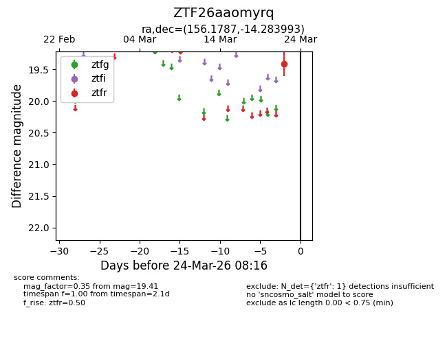
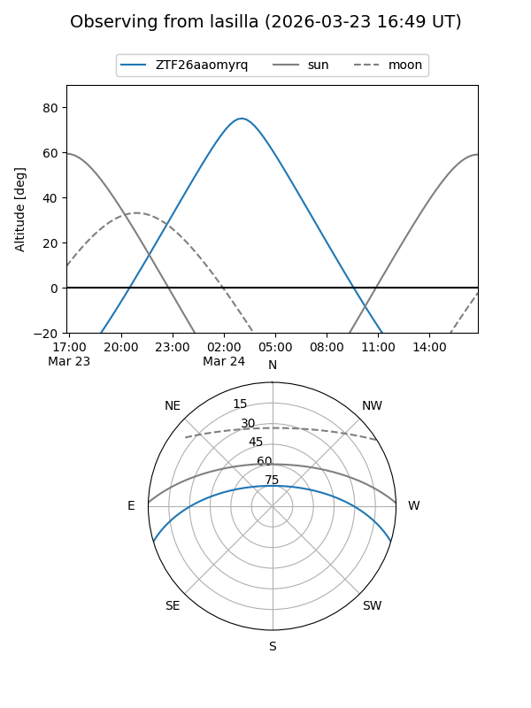
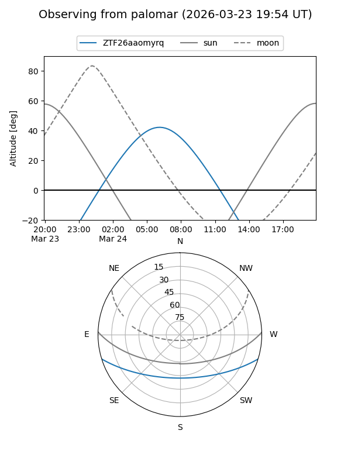

ZTF26aaomyrq
Target ZTF26aaomyrq at 2026-03-24 08:18
Aliases and brokers:
FINK: link
Lasair: link
ALeRCE: link
alt names
ZTF26aaomyrq (ztf,fink_ztf)
Coordinates:
equatorial (ra, dec) = 156.1787,-14.28399
equatorial (HMS+DMS) = 10:24:42.88,-14:17:02.38
galactic (l, b) = (257.6873,+35.39282)
Flags:
Photometry:
last ztfr=19.41
1 ztfr detections
Lightcurve

Visibility


Additional plots